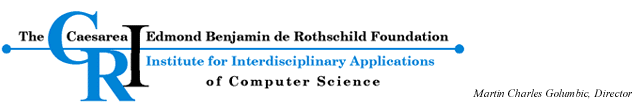

<% myheader("Sponsors") %>
<tr>

<% mysidebar() %>

<td>
   YAPC is a low budget conference, we try to keep both our expenses 
   and the fee we charge as low as possible. Still we do have expenses,
   hence we are looking for sponsors to finance the following items and
   other general expenses. Some <a href=sponsorship.html>notes</a> for
   the potential sponsors.
   <p>
   At this early stage we are expecting around 200-250 participants
   and we plan to charge 250 NIS per person. This will cover some of 
   our expenses but we would like to reduce this fee. We are listing 
   here <i>some</i> of the items that need to be sponsored.

   <p>
   <table border=1 width=90%>
    <tr><td><b>What ?</td><td><b>Who sponsors/provides it ?</td>
    <tr><td>Printed copy of the proceedings</td><td><a
   href="http://www.mercury.co.il/"></a>&nbsp;<p></td>
    <tr><td>The lecture rooms<br>Local organization</td><td><a
   href="http://www.cri.haifa.ac.il/">
   
    </a>
    <tr><td>Cash + presents:<br>
      - 3 accounts for half a year of 750K/96K<br>
      - 3 accounts for half a year of 256K/64K<br>
   (The free accounts can be used either on ADSL or Cable but they
   do NOT include payment to those suppliers, so you will still have
   to pay to Bezeq or the Cable company)<br>
      - discount on some of the Internet account specially for the paricipants
        of our conference. (Details will be given on the conference)
</td><td><a href="http://www.actcom.net.il/">
     
     
    </a></td>
    <tr><td>Presents:<br>
    - 5 coupons for ASPN Perl 1-year subscriptiont that
    includes Perl Dev Kit, Komodo,
    Visual Perl, and Safari Bookshelf.
    Value is $495 US per bundle.
    <br>
    <a href="http://www.activestate.com/Products/ASPN_Perl/">details</a>
    <p>
    - 50 coupons to save $50 on 
    <a href=http://www.ActiveState.com/PerlASPX>PerlASPX</a> that
    incudes the book of Yevgeny Menaker.

</td><td><a href="http://www.activestate.com/"></a></td>
    <tr><td>Cash</td><td><a href=http://perl.oreilly.com/></a></td>
    <tr><td>10 books:<br>
    - The Career Programmer: Guerialla Tactics<br>
    - Herding Cats<br>
    - User Interface Design for Programmers<br>
    - Developing Trust<br>
    - Software Development on a Leash<br>
    - Writing Perl modules for CPAN<br>
    - The qmail Handbook<br>
    - MySQL<br>
    - Data Mining and Statistical Analysis with SQL<br>
    - SVG Programming: The Graphical Web<br>
</td><td><a href=http://www.apress.com/>
    
</a><br>
    <a href="http://www.springer.de/" alt="Springer">
    </a></td>
    <tr><td>5-5 copies of the following books:<br>
         - Core Perl<br>
         - Programming Perl in the .NET Environment<br>
         </td><td><a href=http://www.pearson.com/>
        </a></td>
    <tr><td>Organization</td><td>
       <a href="https://szabgab.com/">Perl Training Israel (Gabor Szabo) </a><br>
</td>
   </table>
  <p>
   Interested parties please read the information about 
   <a href=sponsorship.html>sponsorship</a>
   and contact Gabor Szabo by e-mail or by phone.
</td>
</tr>
<% myfooter() %>
